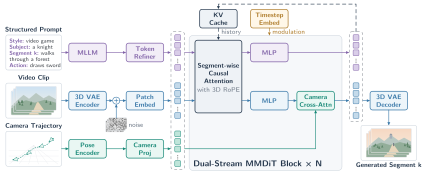

Think of a stage play. The set description stays on the wall all night, but each stage direction is shown to the actors only during its own scene. Show them every direction at once and they act too early or repeat the last scene's business.
연극을 떠올려 보자. 무대 설정은 공연 내내 벽에 붙어 있지만, 지시문은 해당 장면에서만 배우에게 보여 준다. 모든 지시문을 한꺼번에 보여 주면 배우들은 너무 일찍 움직이거나 지난 장면의 동작을 되풀이한다.
How it works: one causal DiT for text and camera작동 방식은 텍스트와 카메라를 함께 받는 인과 DiT 하나
HunyuanVideo 1.5 is turned into a segment-by-segment generator that reads a structured prompt, the camera path, and a KV cache of its own past. A vision-language Prompt Enhancer turns user requests into that prompt.
HunyuanVideo 1.5를 구간 단위 생성기로 바꿔, 구조화된 프롬프트와 카메라 경로, 자기 과거를 담은 KV 캐시를 읽게 한다. 비전·언어 Prompt Enhancer가 사용자 요청을 그 프롬프트로 바꾼다.

- Structured captions.구조화된 캡션.Style, subject, per-segment scene text, and timestamped actions, plus camera trajectories estimated from each video.스타일, 주체, 구간별 장면 설명, 시각이 붙은 행동, 그리고 영상마다 추정한 카메라 궤적.
- Action-aware causal attention.행동을 구분하는 인과 어텐션.Scene text stays visible to later segments, action text only inside its own window; camera enters through cross-attention.장면 설명은 뒤 구간에서도 보이지만 행동 문장은 자기 구간 안에서만 보인다. 카메라는 교차 어텐션으로 들어간다.
- Own history, then distill.자기 과거로 학습 후 증류.Segment Forcing builds each next context from a one-step estimate of the current segment; consistency, then distribution-matching plus adversarial distillation, cut 100 evaluations to 4.Segment Forcing은 현재 구간을 한 스텝으로 추정해 다음 문맥을 만든다. 이어서 일관성 증류, 분포 일치와 적대적 증류로 평가 횟수를 100번에서 4번으로 줄인다.
Key point: text commands are where it pulls ahead핵심은 텍스트 명령에서 크게 앞선다는 것
Wins on prompt following reach 65–75% with losses near 10%, while camera control mostly ends in ties. The open baseline picks from VLM-generated proposals instead of taking free-form text.
지시 이행에서는 승률이 65~75%이고 패배는 10% 안팎인 반면, 카메라 제어는 대부분 무승부로 끝난다. 공개 비교 모델은 자유로운 텍스트 대신 VLM이 낸 제안 중에서 고른다.
Results: camera is close, memory still trails Genie 3결과는 카메라는 비슷하고, 기억은 아직 Genie 3에 뒤짐
When the camera returns to a place, Genie 3 keeps the scene better, while Hy-Nomas roughly ties HappyOyster and clearly beats LingBot-World v2. The authors suspect Genie 3's grounding in Street View data helps.
카메라가 같은 곳으로 돌아올 때 장면을 더 잘 지키는 쪽은 Genie 3이고, Hy-Nomas는 HappyOyster와 비슷하며 LingBot-World v2는 확실히 이긴다. 저자들은 Genie 3이 Street View 데이터에 기반한 덕분이라고 추정한다.
| Task vs model | Win | Tie | Loss |
|---|---|---|---|
| Camera vs Genie 3 | 32.0 | 54.0 | 14.0 |
| Camera vs HappyOyster | 36.0 | 54.0 | 10.0 |
| Camera vs LingBot v2 | 29.0 | 61.0 | 10.0 |
| Memory vs Genie 3 | 13.3 | 56.7 | 30.0 |
| Memory vs HappyOyster | 30.0 | 46.7 | 23.3 |
| Memory vs LingBot v2 | 58.3 | 40.0 | 1.7 |
For multi-turn world models, separate what should persist from what should happen once, right in the attention mask. Scene text stays visible and action text expires, which fixes action order and repetition without adding modules.여러 턴을 다루는 월드 모델이라면, 계속 남아야 할 것과 한 번만 일어날 것을 어텐션 마스크에서 바로 나누자. 장면 설명은 계속 보이고 행동 문장은 만료되게 하면, 모듈을 더하지 않고도 행동 순서와 반복 문제가 고쳐진다.
Every comparison is a human preference vote on 60–100 scenarios, with no automatic metric and no reported generation speed, partly against closed systems used through their own interfaces. The RTX 4090 path adds INT8, sparse attention, and offloading, whose differences the authors note may grow over segments.모든 비교는 시나리오 60~100개에 대한 사람의 선호 투표이고, 자동 지표도 생성 속도도 보고하지 않으며, 상대 일부는 자체 인터페이스로 쓴 비공개 시스템이다. RTX 4090 경로는 INT8, 희소 어텐션, 오프로딩을 더하는데, 저자들 스스로 그 차이가 구간이 쌓일수록 커질 수 있다고 적었다.